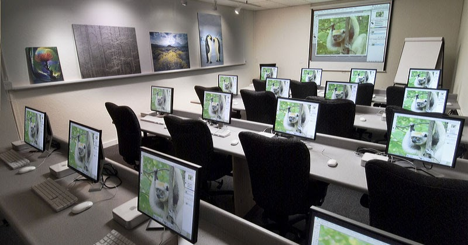

El plan de soberanía en el Espacio Digital Abierto constituye un avance trascendental para nuestra tarea social barrial. Mediante la instalación de computadoras con software libre, logramos construir una red de aprendizaje continuo que ayuda a los chicos programar y conocer códigos fuentes, acompañándolos eficazmente para la continuidad de sus estudios técnicos.
Ante las marcadas desigualdades en el entorno corporativo, este lugar provee herramientas indispensables para que los chicos logren estudiar, crear y aprender.
Los alumnos asisten diariamente a clases de informática libre y ejercitación de sistemas mediante herramientas interactivas basadas en fines comunitarios. Aprenden a instalar sistemas operativos en computadoras recicladas, utilizar las utilidades de distribuciones Linux y estructurar entornos educativos sencillos para complementar las tareas del colegio técnico de la zona.
Esta red no solo acompaña el trayecto educativo de los jóvenes inscriptos, sino que también promueve activamente el conocimiento abierto disminuyendo drásticamente la brecha económica por falta de licencias en los hogares vulnerables.
La estrategia institucional requirió un esfuerzo solidario entre docentes y estudiantes para organizar jornadas de instalación y acondicionar aquellos sistemas lentos o desaprovechados desde hacía meses en la institución.
Luego de intensas jornadas de programación y redes en el salón, el rincón quedó completamente listo y habilitado para recibir las actividades de apoyo informático y talleres de código abierto.
La coordinación general agradece la puesta en marcha de este nuevo espacio que convierte computadoras viejas en verdaderas posibilidades de soberanía digital y progreso tecnológico de calidad.
La coordinación general agradece la puesta en marcha de este nuevo espacio que convierte computadoras viejas en verdaderas posibilidades de soberanía digital y progreso tecnológico de calidad.
EQUIPAMIENTO E INFRAESTRUCTURA DEL NUEVO LABORATORIO
La adecuación del salón informático contempló la colocación de diez terminales de aprendizaje totalmente adaptadas con sistemas Linux y suites de oficina educativas. Se instaló un servidor de archivos local utilizando un switch de última generación que garantiza una conectividad segura durante las horas diarias de prácticas y desarrollo de proyectos comunitarios.
Los voluntarios de las áreas informáticas asumieron la responsabilidad de coordinar las mesas de soporte técnico y talleres de administración dentro del espacio comunitario. Esta experiencia solidaria les permite aplicar dinámicas grupales de enseñanza, control de sistemas operativos y programación interactiva en un entorno digital, aportando una ayuda fundamental a su formación técnica antes de insertarse en los establecimientos laborales oficiales.
ALCANCE ACADÉMICO Y VINCULACIÓN CON LA COMUNIDAD
Uno de los objetivos más importantes de este rincón es acercar su impacto más allá de los chicos habituales del taller. Se coordina utilizar estas instalaciones a la mañana para dictar cursos de herramientas informáticas dirigidos a vecinos del barrio, fomentando de este modo una profunda autonomía digital y comunitaria que agilice las gestiones laborales mediante el uso correcto de las herramientas de código libre.
A diferencia de otras salas de informática convencionales, este entorno fomenta el uso de plataformas de desarrollo abierto para motivar el razonamiento lógico elemental. Esto enseña a los futuros técnicos a convivir bajo normas de alfabetización tecnológica temprana, preparándolos para resolver trabajos prácticos con recursos sumamente didácticos, interactivos y atractivos para todo su ciclo laboral obligatorio.
En el siguiente informe audiovisual se detallan los pasos técnicos realizados durante la etapa de reconstrucción.
El equipo docente diseñó una nueva rutina de acompañamiento que integra el uso guiado del equipamiento en la resolución de problemas lógicos complejos. Los profesores destacan que tener estas herramientas digitales estables estimula fuertemente el entusiasmo de los alumnos, incrementando la asistencia y mejorando el desempeño en las materias más difíciles del nivel superior.
Para asegurar el sostenimiento técnico del rincón a lo largo del tiempo, se establecieron lazos de voluntariado con estudiantes universitarios de informática que controlarán periódicamente el software instalado de forma gratuita. Este esquema de trabajo compartido asegura un soporte continuo de sistemas para que las próximas generaciones de jóvenes puedan seguir estudiando con programas veloces, manteniendo el espacio actualizado frente a las constantes necesidades de la comunidad escolar.
El avance consolidado en el Aula de Software Libre demuestra que la articulación entre compromiso social, educación comunitaria y tecnologías de código abierto puede lograr resultados hermosos. Este rincón no es simplemente un banco con pantallas encendidas; es un testimonio real de las capacidades de nuestros jóvenes cuando tienen el cuidado social y el recurso pedagógico para edificar caminos de igualdad para su propio crecimiento técnico.
TESTIMONIOS Y RECONOCIMIENTO AL EQUIPO TÉCNICO
Queremos manifestar un enorme agradecimiento a cada una de las personas que apuntalaron el desarrollo de esta aula informática. Desde los donantes que aportaron los equipos necesarios hasta los jóvenes que armaron la instalación de red, cada esfuerzo voluntario resultó clave para concretar un espacio que marcará un antes y un después en nuestra querida propuesta popular.
PERSPECTIVAS FUTURAS Y EXPANSIÓN DEL MODELO SOLIDARIO
El plan de la institución prevé la meta de replicar esta valiosa forma de contención en otros colegios de la localidad que sufren un retraso de conectividad preocupante. Sostenemos firmemente que la educación es un derecho, y nuestro grupo de técnicos voluntarios está totalmente dispuesto para asesorar a otros centros en la apertura de sus propios espacios.
La pedagogía social tiene la tarea histórica de dar respuestas contenedoras a las realidades difíciles de la juventud de hoy. Con la inauguración de estas redes, ratificamos nuestro lazo inquebrantable con el futuro comunitario y la equidad social, demostrando que el tejido social se fortalece desde abajo, con trabajo diario, organización vecinal y una perspectiva fuertemente solidaria hacia el porvenir de nuestro querido suelo argentino.
Cada tarea que se termina en este sistema digital representa un peldaño directo hacia la permanencia escolar, el conocimiento técnico y la construcción de un porvenir mejor. Invitamos a todos los vecinos a acercarse, ver nuestro trabajo y sumarse a las próximas campañas de recolección de hardware, porque el crecimiento educativo de nuestros jóvenes es un compromiso social que nos involucra a todos por igual.

CÓMO SUMARSE A LAS PRÓXIMAS CAMPAÑAS DE RECOLECCIÓN
Si trabajás en una oficina o querés traer un equipo viejo que ya no utilices en tu hogar, podés acercarlo directamente a los responsables del centro. Nuestra sede recibe computadoras de escritorio, auriculares, mouses ópticos y cables conectores que sean acondicionados por el equipo para seguir la instalación de este hermoso espacio de desarrollo libre.
Nuestra meta para el próximo ciclo es duplicar el número de puestos conectados y empezar a dictar clases de programación web a los chicos del barrio. Este engranaje comunitario sigue creciendo y confirma que el código abierto es la opción correcta para asegurar un crecimiento técnico que sea plenamente feliz, accesible para todos y cimentado en la solidaridad de nuestra provincia.